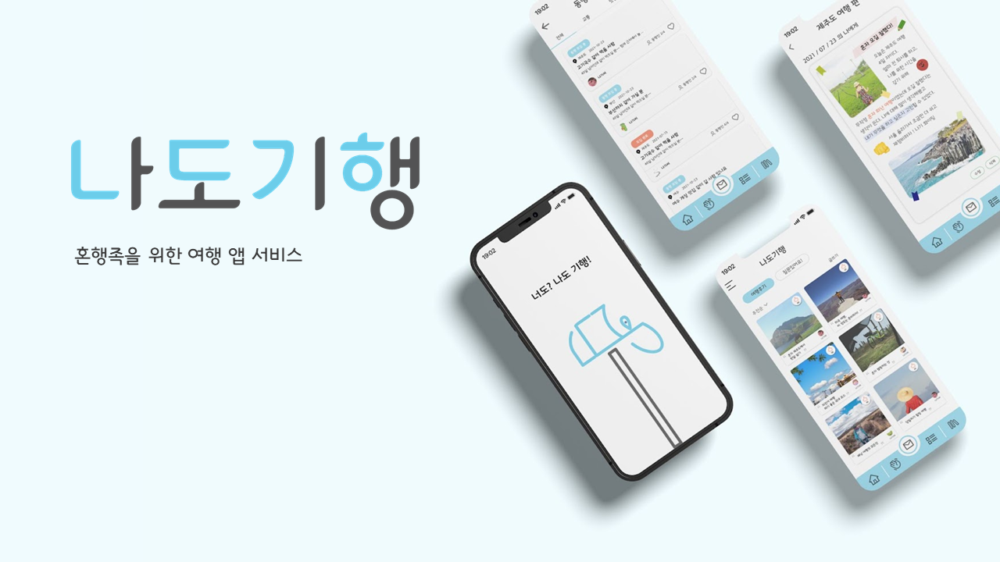
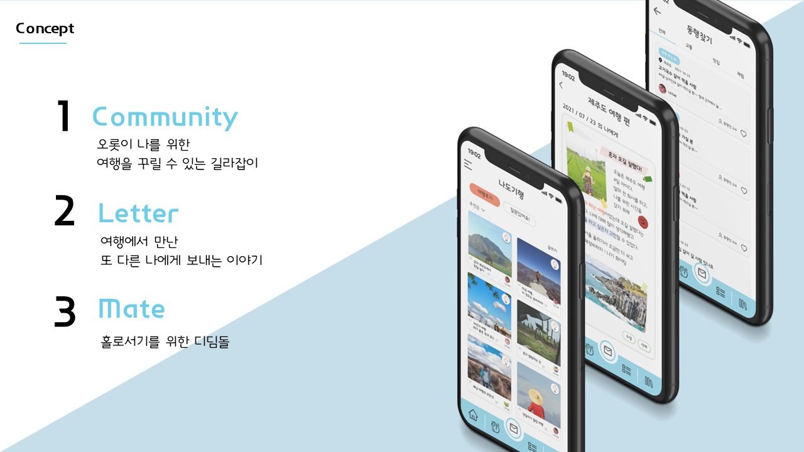
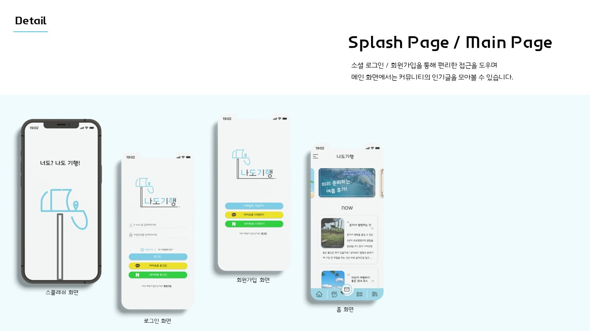
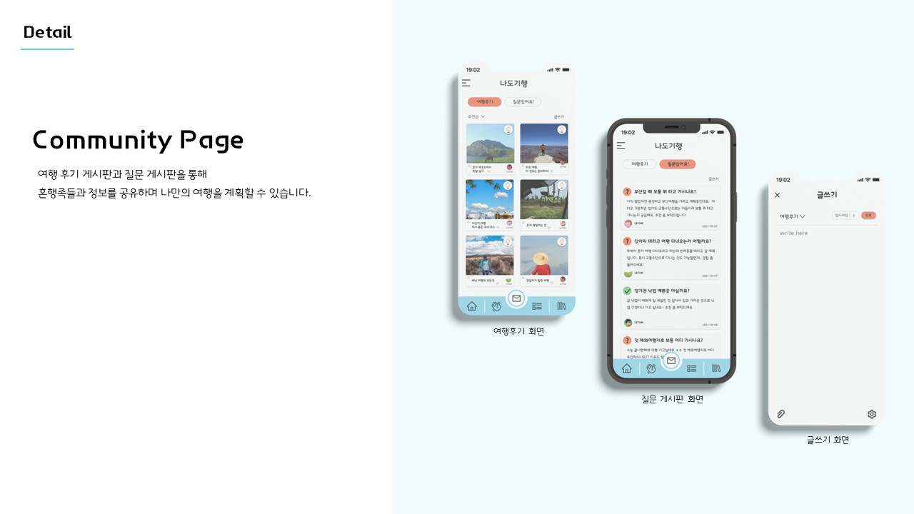
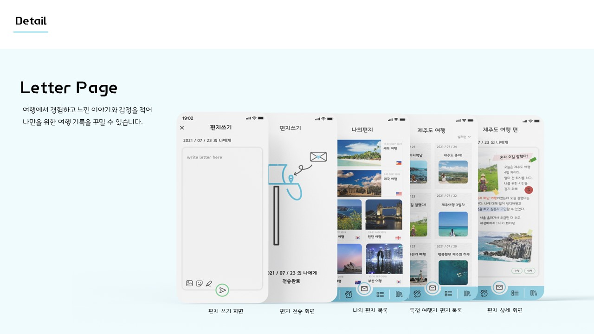
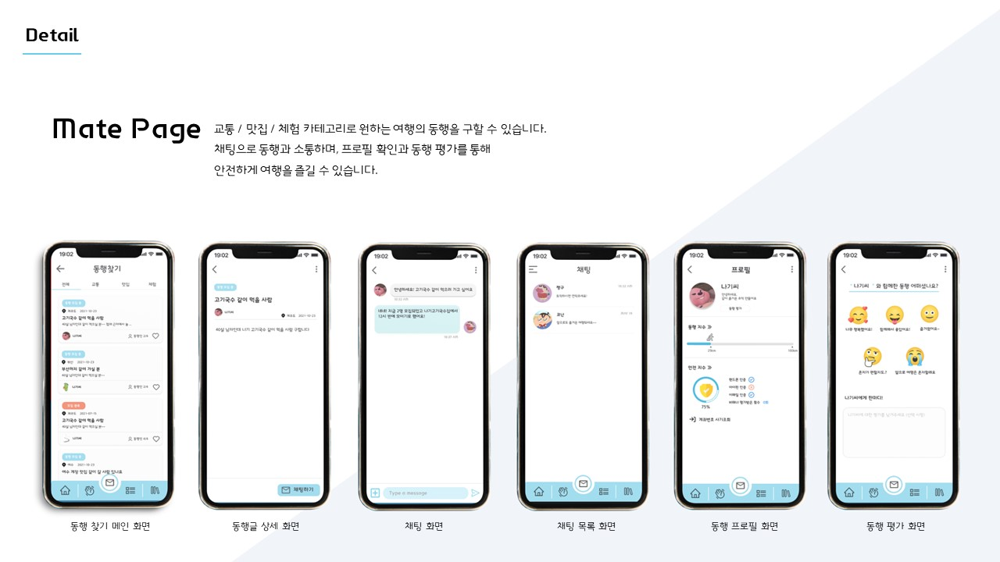
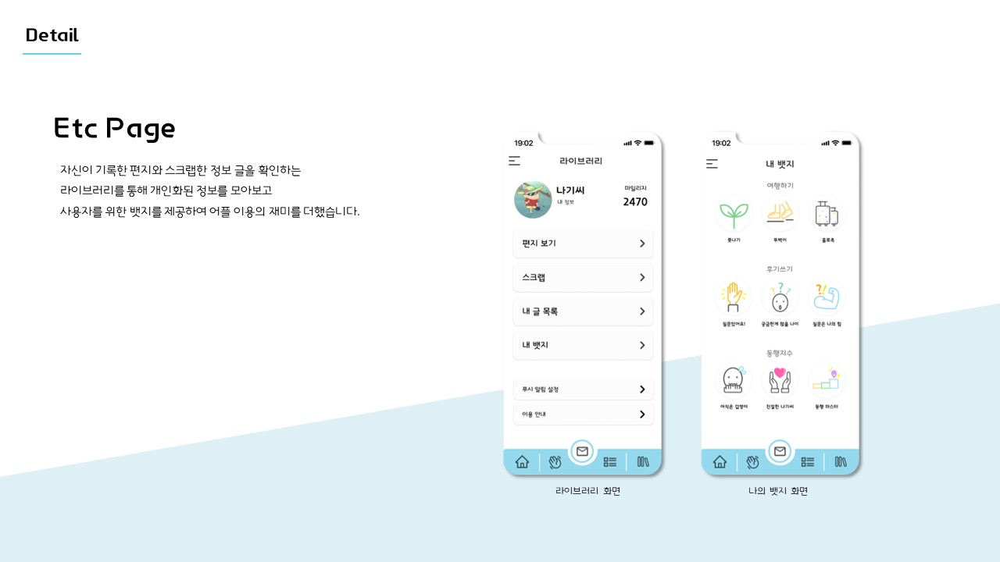
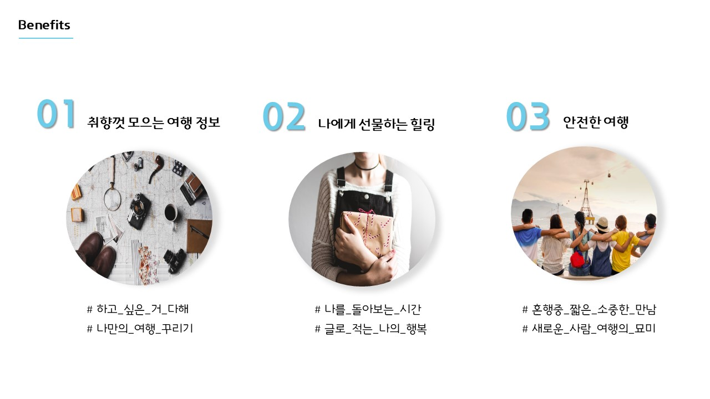

나도기행 여행 어플 프로젝트
혼행, 즉 혼자여행하기가 유행이자 대세가 된 현재 혼행족들을 위해 또는 혼행을 하고싶지만 어딘가 걱정거리가 있는 사람들을 위해 어플을 디자인했다. 다양한 혼행 후기들을 보고 질문을 주고 받으면서 궁금한 점을 해결할 수 있다. 또한 혼행을 다녀온 후 기록을 남겨 다른이와 공유할 수 있고 또는 혼자만의 기록으로 남길 수 있다.







